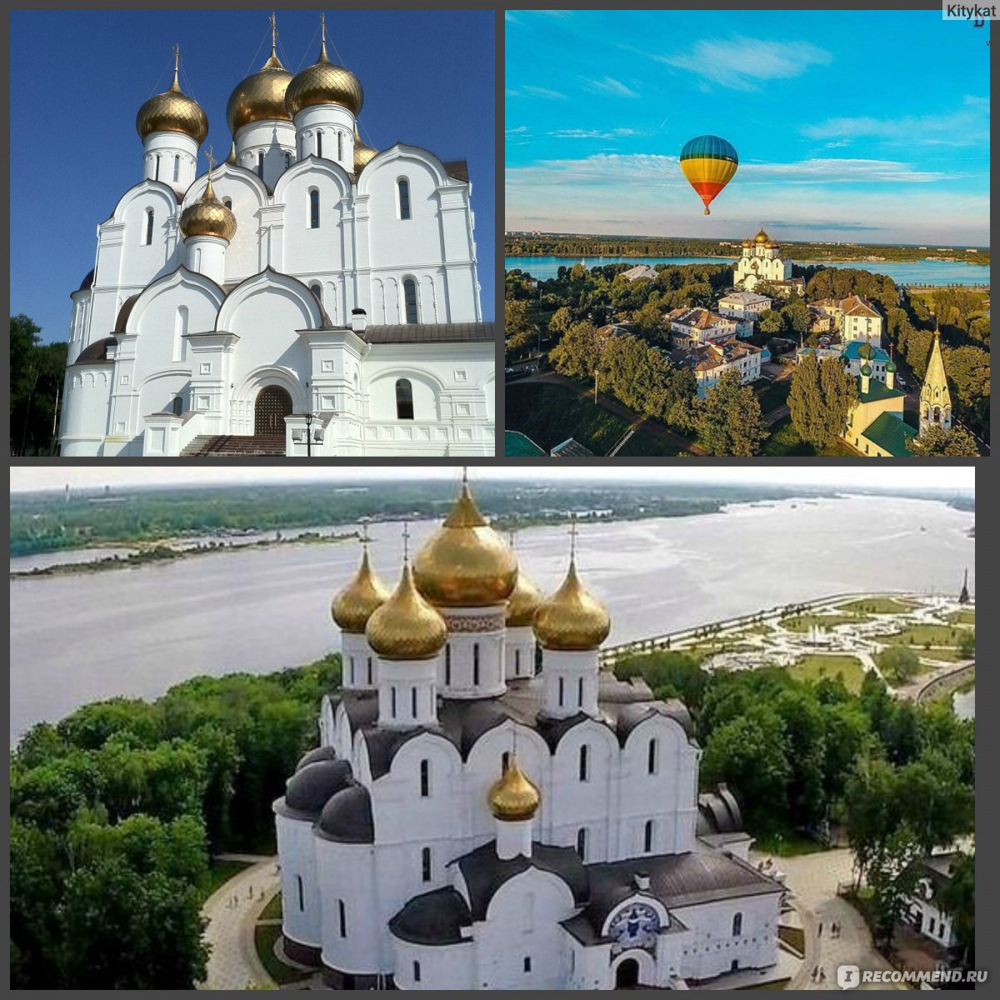
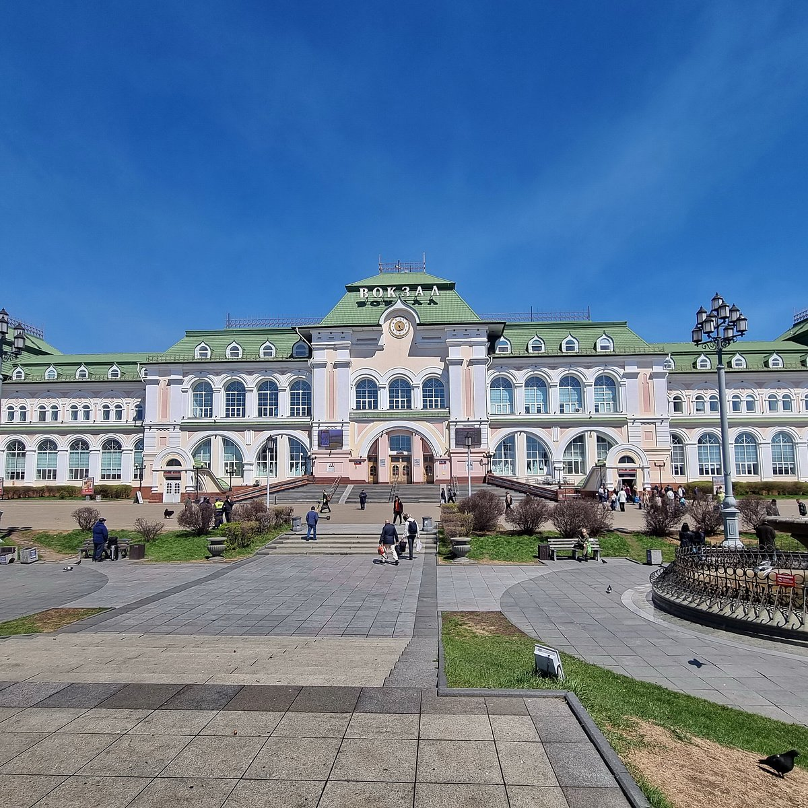
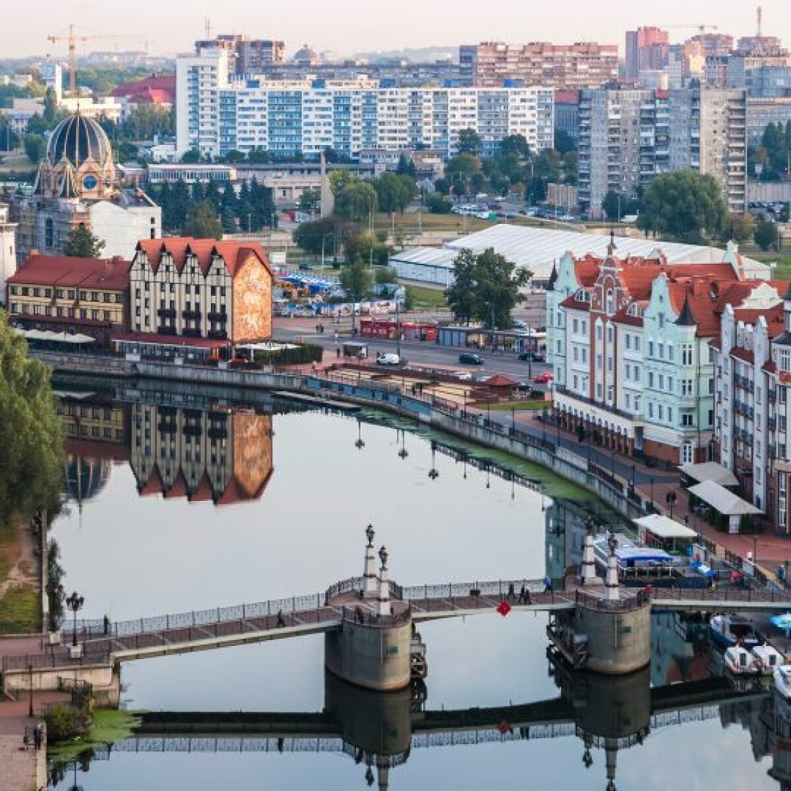

  
 Москва
Москва
Москва — столица Российской Федерации и один из крупнейших мегаполисов мира. Первое летописное упоминание о городе относится к 1147 году, когда суздальский князь Юрий Долгорукий призывал своего союзника Новгород-Северского князя Святослава Ольговича «прийти ко мне, брате, в Московъ». Именно этот год официально принято считать датой основания города.
Как самостоятельный субъект Российской Федерации и город федерального значения, Москва является центром крупнейшего Московского региона. Географически столица со всех сторон окружена Московской областью, хотя административно в её состав не входит. При этом Москва активно развивает связи со своими пригородами и городами-спутниками, образуя огромную городскую агломерацию.
Официальная площадь Москвы составляет порядка 2561 км2. Территория города существенно увеличилась в 2012 году за счёт проекта «Новая Москва», когда к столице были присоединены обширные земли на юго-западе, ранее входившие в состав Московской области. В результате этой масштабной расширительной кампании площадь города выросла более чем в два с половиной раза.
По официальным данным статистических органов на 2026 год, численность постоянного населения Москвы составляет около 13,3 миллиона человек. Это делает её самым густонаселённым городом не только в России, но и во всей Европе. Реальное же количество жителей с учётом временно проживающих и трудовых мигрантов оценивается экспертами значительно выше.
Москва остаётся главным политическим, экономическим, научным и культурным центром страны. Здесь расположены Кремль, федеральные органы власти, штаб-квартиры крупнейших российских компаний и многочисленные институты. Город сочетает в себе богатейшее историческое наследие с ультрасовременной инфраструктурой, включающей масштабную сеть метрополитена и деловой центр «Москва-Сити».
 Санкт-Питербург
Санкт-Питербург
Санкт-Петербург — второй по величине город России, имеющий статус города федерального значения и неофициальное звание «северной столицы». Он был основан 27 мая 1703 года первым российским императором Петром I. Заложение Петропавловской крепости на Заячьем острове в устье реки Невы положило начало новому портовому городу, который в дальнейшем более двух веков оставался столицей Российской империи.
Санкт-Петербург расположен на северо-западе страны и выполняет роль административного центра Северо-Западного федерального округа и Ленинградской области, несмотря на то, что сам, как и Москва, является отдельным субъектом РФ. Город имеет выход к Финскому заливу Балтийского моря и граничит непосредственно с территориями Ленинградской области.
Площадь Санкт-Петербурга составляет около 1439 км2, что делает его значительно более компактным по сравнению со столицей. Территория города расположена на многочисленных островах Невской дельты, из-за чего архитектурный облик мегаполиса неразрывно связан с реками, каналами и мостами.
На 2026 год численность населения Санкт-Петербурга составляет около 5,6 миллиона человек. Город уверенно занимает второе место в России и является самым северным среди всех городов мира с населением свыше одного миллиона жителей.
Санкт-Петербург известен на весь мир своей уникальной архитектурой, белыми ночами и памятниками культуры. Исторический центр города и связанные с ним комплексы памятников включены в список Всемирного наследия ЮНЕСКО. Наряду с культурным статусом, Санкт-Петербург остается важнейшим промышленным, научно-образовательным и логистическим центром страны.